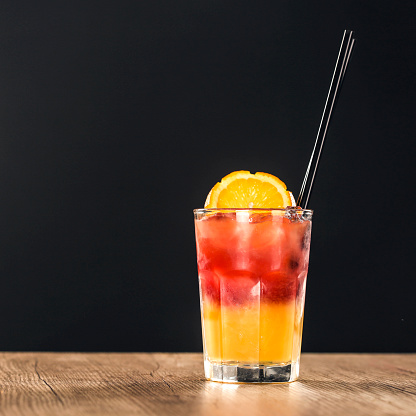

Tequila Sunrise

Description
Ingredients
- 1.5 oz tequila
- 8 oz Orange Juice
- 0.75 oz Grenadine
Optional
- Maraschino cherries
- Orange slices
Steps
- Partially fill glass with ice
- Pour half of orange juice, the tequila, then remaining orange juice
- Place lip of spoon on edge of glass
- Pour the greneadine onto the spoon, allowing it to slide down the glass onto the ice
- After grenadine has settled, add additional garnish